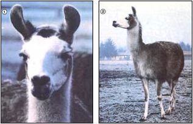
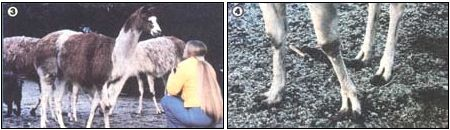

It's a sturdy pack animal, a valuable wool producer, and an affectionate companion to boot. In short, a llama can offer your homestead livestock program...
I spotted the pastured animals before I pulled into Harlan Harris's driveway. And that first glance was enough to alert my senses to the strangeness of the beasts. Their slim legs appeared too frail to support the thickly wooled bodies . . . and - as I pulled off the road for a better look - the herd, acting in choreographed unison, lifted their long necks and turned their graceful horselike heads . . . to get a better look at me .
The animals posed - motionless as statues - until I came close to the fence . . . whereupon, still acting as one, they exploded across the field. I was amused to notice that the peculiarity of the creatures was maintained even in flight, as their sprinting gait involved lifting both feet on a side simultaneously!
The mysterious beasts were, of course, llamas ( Lama glama ). Natives of the South American Andes, they're rapidly gaining popularity in the United States . . . in the eyes of livestock keepers who use them as pack animals, raise them for the wool they produce, or simply are fascinated by the beasts' personalities! In fact, the purpose of my journey was to visit a gentleman who supplies llamas to such eager buyers . . . Mr. Harlan Harris from Tacoma, Washington.
Harlan first became interested in llamas some ten years ago, when a friend brought an aged animal back from a trip to Las Vegas. Harris borrowed the beast to lend a bit of life to his Christmas nativity scene ... and he was astounded when 25,000 passers-by stopped to see and ask questions about the gentle "actor".
It seems that Harlan was fascinated by the elderly llama, too . . . because it wasn't much more than a year later that he purchased two young animals for his own ranch. Today he maintains a herd of about 18 llamas (the number, of course, fluctuates as new animals are born and others are sold).
Most of the folks who purchase llamas, Harlan told me, plan to use them as pack animals . . . a purpose for which the South American natives are well suited. The hemoglobin in their blood has an unusually well-developed ability to absorb oxygen - a trait which makes the animals at home at high elevations - while their deceptively slender legs are fully able to support hefty loads over steep, rocky terrain. (A 200-pound male llama is capable of carrying up to 130 pounds, and covering up to 20 miles a day when doing so. Folks who "pack" the animals regularly, however, usually try to load the beasts with about half that weight.)
The little load-haulers are intelligent as well. In fact, Harlan estimates that the average llama can learn enough to begin functioning as a pack animal after about 20 minutes of training!
There are, of course, a few small problems that you should know about before setting out to establish a homestead llama herd. For one thing, the first meeting between a horse and one of the "humpless camels" is often a traumatic event. While the llama will probably be unaffected by the encounter, the larger animal is likely to spook at the very sight of the "peculiar" South American beast. (But once a llama and a horse become accustomed to each other's company, they'll usually get along fine!)
As a general rule, llamas are loyal and gentle. They do, however, have their limits and - like camels - are capable of hissing, kicking, and spitting to show their anger. Fortunately, the animals seldom use such "talents" on humans . . . reserving them, instead, to show their displeasure with other members of their flock. [EDITOR'S NOTE: Some llamas will spit at people when angry: A breeder we know passed on a simple solution to the problem, though. He just dresses in old clothes - since llama saliva can be pretty rank-smelling - and then lets the animal "have at" him, without reacting to the "insult" at all. Alter an hour or two, he reports, the llama will become bored with the game ... and the habit will be broken for good!]
More often than not, a llama will show any dissatisfaction with its master or mistress (usually as a result of being, according to its standards, overloaded or worked too long) by lying down. A beast of burden that protests in such a manner won't likely budge until the problem is remedied . . . and no amount of cajoling, begging, swearing, prodding, or pushing will affect the animal's decision.
Of course, a llama keeper who raises his or her beasts for wool is less likely to be faced with a balky animal than is a person who's concerned with the creature's pack-carrying ability. And llamas do produce a high-quality wool. When sheared once every other year, each adult animal can be expected to yield 6 to 12 pounds of thick, light fleece . . . which is (at the time of this writing) worth around $1.40 per ounce (retail, cleaned and carded).
The animals have two-layer coats . . . an outer fleece composed of (relatively) long, coarse hairs and a softer, finer underwool. Furthermore, you can gather the valuable fibers either by shearing or by combing your llamas. Sheared wool will contain both outer- and underwools. On the other hand, should you choose to "harvest" with a comb, you'll obtain mostly the downy underfleece . . . which is similar to that produced by such fine wool sheep as Corriedales.
Better yet, llamas' coats don't contain the oils that sheep wool does, so - while one can expect a 30 to 40% weight loss after washing the fiber produced by a flock of ewes - llama fleece doesn't lose any weight when it's washed! What you shear (or comb) is what you get . . . and it's all usable!
The Andean animals occur in a rainbow of colors, too - including reddish brown, a mottled pattern known as "moromoro", snowy white, butterscotch, and velvety black - so it's seldom necessary to dye their wool before using it in home spinning projects. (Once spun - and lightly twisted - the yarn must be washed in warm water, with a mild detergent added, to set the "twist" of the cord and remove any "wet dog" odor.)
Young llamas are possessed of almost insatiable curiosity, and make very beguiling pets. They're friendly by nature, too . . . quickly attaching themselves to other animals and to their owners. They'll even "chum around" with dogs! (But, I'm told, there's nothing more pathetic than a lonely llama ... and, for that reason, some breeders will sell their animals only in groups of two or more.)
Harlan's herd belongs to an "extended family" that includes Mediterranean miniature horses, pygmy goats, and dwarf Sicilian donkeys . . . and - as far as the llamas are concerned - all of the animals are "close as kin" (except for one particularly ornery billy goat, which they view as a pest).
Because of the breed's ability to make friends with other creatures, an "only child" llama will usually be just as happy with attention from its owner and "different" pasture mates as it would be in the company of another of its own kind. (Male llamas, in fact, will fight to establish dominance when kept together . . . though an unlimited number of females - with a single male, if offspring are desired - can be kept together without problems.)
In their native South America, llamas obtain the bulk of their food by grazing on the coarse grass found in the semimountainous regions they prefer. Therefore, the beasts will be more than satisfied with almost any pastureland you can make available to them. Harlan supplements his animals' foraged diets with an alfalfa (75%) and orchard grass (25%) hay. And such "extra" rations would be absolutely necessary in areas where the available pastureland is under snow during the winter months.
On the other hand, llamas don't need expensive grain (although they enjoy having it as a treat once in a while). Aside from forage, hay, and plenty of water, your woolly charges will require only a few sticks to chew on (to keep their teeth from growing too long, especially during the cold months when the animals might not have other access to such "chewy" fare) and a minimum of shelter.
In mild climates, llamas can often find all the weather protection they need underneath a grove of trees. A simple three-sided shed will increase the animals' comfort, though . . . and a more or less permanent structure will be necessary in areas that typically experience wet, snowy winters or very hot, dry summers.
Finally, a llama keeper should be certain to vaccinate his or her animals against "blackleg" ( Clostridium chauvoei ), and to worm them (check with your vet to determine the appropriate anthelmintic) twice a year. Otherwise, the "South Americans" are hardy and easy to care for.
As you'd imagine, the fact that llamas are valuable and versatile animals is reflected in the price that they can bring on the market. The cost can be as variable - according to Harlan - as is the length of the wait between ordering one of the beasts and actually taking delivery. Prices range from $400 to $1,000 for males and $2,500 to $3,000 for females. (The latter, of course, are more valuable because of their ability to expand the herd.)
Since it's now illegal to import llamas from South America - and because the demand for North American-raised animals is steadily increasing - it can take as long as two years to obtain a llama (especially if your requirements of color, age, sex, etc. aren't flexible). In many cases, however, it's possible to acquire an animal within several months.
The limited availability of the beasts is due to a simple lack of supply. Although a female llama can be bred at three years of age, you see, the gestation period is a full eleven months . . . only one kid is typically born at a time . . . the little one will have to nurse for at least four months . . . and the youngster will have to remain with its parent for another four to six months after weaning, before it can be sold. As you can imagine, then, several years can be required to even double the size of a herd. (However, llamas live for 20 years or more, so once your herd is developed, it'll be around for awhile!)
Of course, not every homesteader or ranch owner will have a use for these strange-looking animals. But folks who need reliable, sure-footed pack beasts . . . who want to grow their own unique wool . .. or who simply want to raise the animals to sell could hardly go wrong by obtaining a llama or two. (As far as I'm concerned, it'd be worth owning a few just to watch them!)
EDITOR'S NOTE: Harlan Harris (Dept. TMEN, 2701 East 176th Street, Tacoma, Washington 98445) will be happy to talk to anyone who's interested in buying one of the critters . .. as will breeders Richard Patterson (Dept. TMEN, Box 188, Sisters, Oregon 97759) and Andy Tillman (Dept. TMEN, Box 135, Athena, Oregon 97813). Please enclose a self-addressed, stamped envelope and $1.00 with your request for information. Your best source of llamas - and of a heap of grassroots information about them - is most likely a newsletter called Mama's Llamas (Dept. TMEN, Box 655, El Dorado, California 95623), which is available for $8.00 a year.
|
 The llama is (above left) lovely... (above right) and aloof... |
 . . .but a good mixer . . . and [4] possesses dainty ? but strong ? legs (and a willful disposition!) |
|